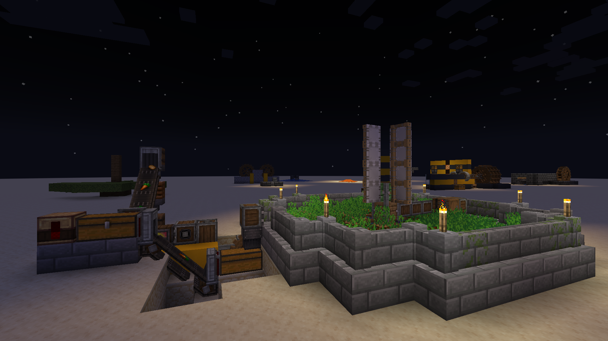
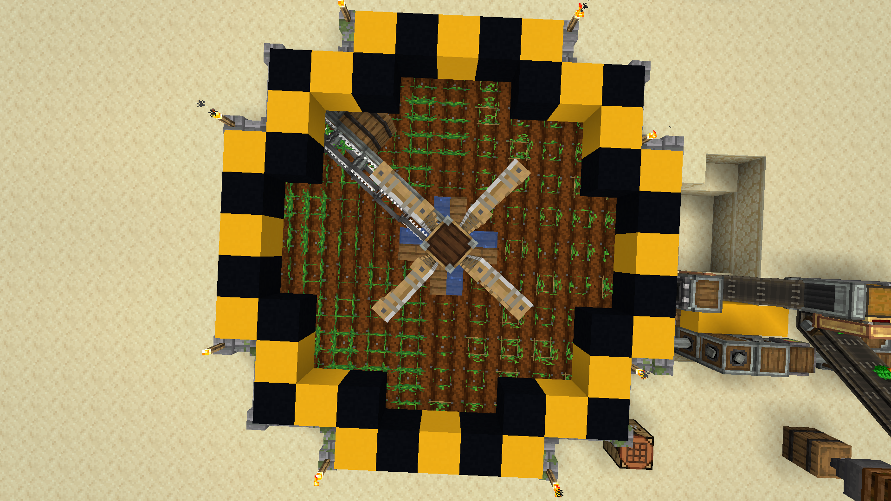

voedsel is wel handig als je niet wilt ver hongeren, normaal zou een plantage maken en/of dieren opsluiten voor die doel, maar ik moet al dat werk zelf doen tewijl je andere dingen kan doen zou hety niet beter zijn als je automatish geoost zou kunnen worden? daar kan Create je mee helpen!
je start met een Windmill Bearing in de center van waar je de farm will hebben, ik zou aan raden om aan elk zijkan een slab of trap neer te zetten waar je later water in ga zetten zo dat je nog toegang heb om de windmill bearing to stoppen als je later nog modificaties will doen.
derna moet je de windmollen zielen geven om het to laten draaien, we gebruiken de draait van de mollen om Harvesters te laten werken. gesproken over harvesters eerst moet je een tijdelijke lijn blokken een rij acter waar je de Harvesters wilt hebben zodat je de Harvesters kan plaatsen waar je ze wilt hebben. Ik zou aan raden om het 5 lang to maken zodat de de 4 waterplekken naast de Windmill bearing de hele plantage kan wateren. dan verbint je de lijn met behulp van een slijmball of superglue. vervang the laaste twee tijdelijke blokken met een barrel en Portable Storage Interface. als je de 5 lang heb gemaak zou alle gewassen binnen de radius van de zwarte en gele lijn in de afbeeling hier naast automatishe geoost worden.
met dat je nu de automatishe oostende deel heb gemaak moet nog wel een plek hebben om al de gewassen omslaan, daar komt de Portable Storage Interface in handig. zet nog een Portable Storage Interface een of twee blokken van de eerste